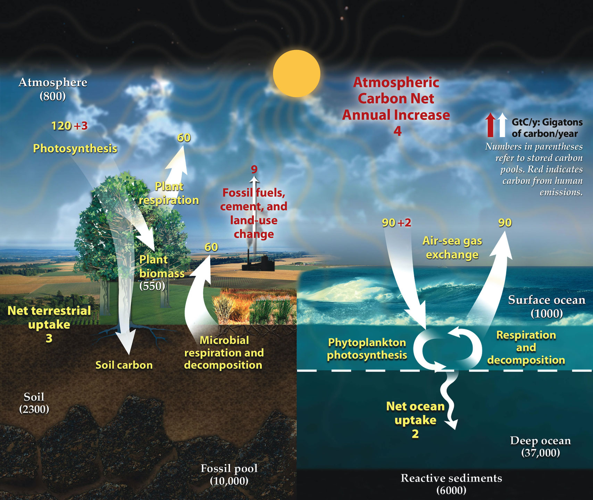
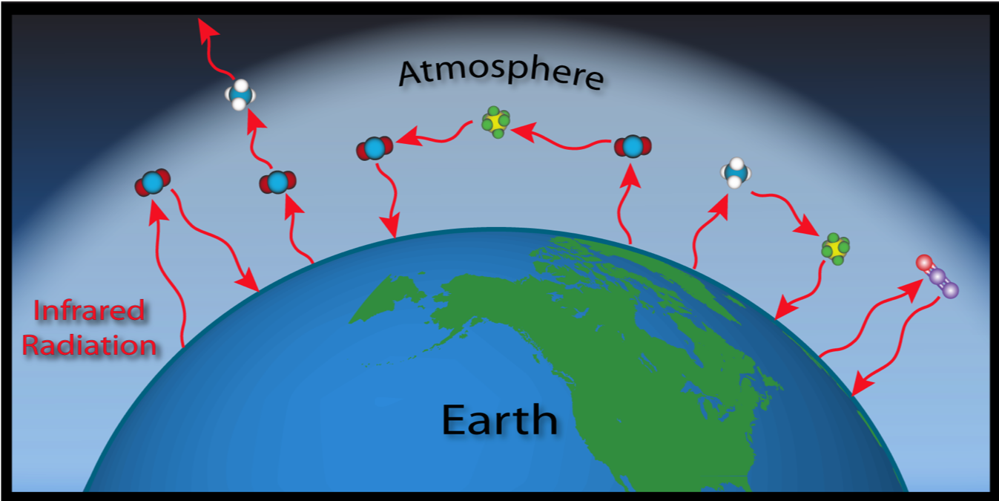

The carbon cycle is the biogeochemical cycle by which carbon is exchanged among the biosphere, pedosphere, geosphere, hydrosphere, and atmosphere of the Earth.
The greenhouse effect is the process by which radiation from a planet's atmosphere warms the planet's surface to a temperature above what it would be without this atmosphere. [1]
According to the 2014 Assessment Report from the Intergovernmental Panel on Climate Change, "atmospheric concentrations of carbon dioxide, methane and nitrous oxide are unprecedented in at least the last 800,000 years. Their effects, together with those of other anthropogenic drivers, have been detected throughout the climate system and are extremely likely to have been the dominant cause of the observed warming since the mid-20th century". [2]
The next 2 pages are interactive graphs of greenhouse gas emissions and average temperature anomaly over time around the world.
You can see the global trend or filter a specific country or region.
What does the future of our carbon dioxide and greenhouse gas emissions look like. In the visualization we show a range of potential future scenarios of global greenhouse gas emissions (measured in gigatonnes of carbon dioxide equivalents), based on data from Climate Action Tracker. [3]
The graph on the next page shows the scenarios where different potential climate policies are implemented in the future.
The most important decisions should be made by the policy makers in the next few years to enforce and ensure real changes that will save the environment.
However, as the residents of the Earth, we should always be responsible to the environment, so that our future generations will have the same or even better world to live in.